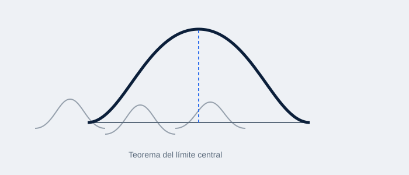

Descripción
Como cierre del curso, las Prácticas 10 y 11 integraron los conceptos de distribución muestral, probabilidad y estadística descriptiva en ejercicios de estimación y análisis muestral aplicados a casos reales de negocios.
Documentos de la práctica
Los documentos completos (prácticas, ejercicios y datos) están disponibles en Google Drive: